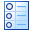
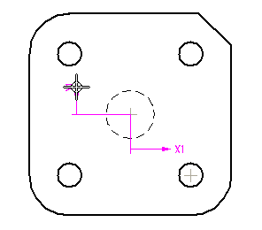
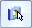
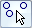
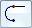
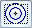

Create a hole table
-
Choose the Home tab (or Tables tab)→Tables group→Hole Table command

. -
On the Hole Table command bar, from the Selection Method list, choose the hole source and selection method:
-
To automatically select all of the holes in a drawing view, choose the By Drawing View option.
Tip:Use this method when a model contains hole features created with the Hole command. This method does not recognize cutouts or 2D circular geometry.
-
To manually select one or more holes on the sheet, choose the By User Selection option.
Tip:Use this method:
-
For a part or sheet metal model that contains holes created as cutouts rather than hole features.
-
When the drawing view contains 2D circle and arc geometry.
-
-
-
Define an origin for the hole table by doing all of the following.
-
Click an element or keypoint to define the X origin, and then click where you want to place the X-origin annotation.
-
Click an element or keypoint to define the Y origin, and then click to place the Y-origin annotation.
Example:
-
-
Select the holes to include in the hole table by doing one of the following:
-
For the By Drawing View method—Click the model drawing view containing hole feature geometry.
-
For the By User Selection method—Click one or more individual holes in the order that you want them to appear in the table, or if the hole order does not matter, then drag a box around a group of holes to select them. You can remove a hole from the selection set using Shift+click.
Tip:When selecting geometry with the By User Selection method, you can filter the type of hole geometry that you want to be able to select using the following options on the command bar:
-
To include 3D holes and threaded hole features created with the Hole command, or hole patterns created with the Pattern commands, click Select Features

. -
To include 2D hole, arc, and circle geometry from 2D drawing views, click Select Geometry

. -
To aid in locating 2D geometry by fence selection, you can also set the following options on the command bar:
-
Arc Locate

to locate arcs. -
Concentric Locate

to locate concentric circles representing counterbore, countersink, and thread geometry, as well as multiple concentric sketch circles.
-
-
-
On the command bar, click Accept.
A dynamic preview of the table is displayed on the drawing.
-
Choose the hole table format to use. Do one of the following:
-
Apply a predefined hole table format using the Saved settings list
 on the command bar.
on the command bar. -
Click the Hole Table Properties button and use the Hole Table Properties dialog box to set the options for table columns and formatting that you want to apply.
Example:You can specify the position of the hole table annotations before you place the table using the Default Position box on the Options tab.
-
-
On the drawing sheet, click to place the table.
-
If you do not want to see the hole origin annotation in the drawing view, you can Hide the hole table origin.
-
You can add holes and remove holes from a table created with the By User Selection option. Select the table, select the Add or Remove Holes Step button
 on the command bar, and then click the holes you want to add and Shift+click the
holes you want to remove. The table updates automatically when you click Accept.
on the command bar, and then click the holes you want to add and Shift+click the
holes you want to remove. The table updates automatically when you click Accept.When you add or remove holes from a table, the resulting hole numbers and rows are affected by the Renumbering settings on the Options tab (Hole Properties dialog box).
-
You can edit the hole table formatting after you place it. To change the columns or formatting of the hole table, select the hole table and click the Properties button on the command bar. You also can in-place edit a hole table. For more information, see Editing a table directly.
-
You can rename the column headings in your hole table. Using the Hole Table Properties dialog box, on the Columns tab, select the column heading you want to rename in the Columns Used list. Then type the new name in the Title Text box.
-
You can predefine up to four columns to provide details about hole specifications and thread depth for entries in your hole table. To learn how to do this, see Define a smart hole table column.
How do I
Change hole table labelsDefine a smart hole table callout column
Hide the hole table origin
Show hole size tolerance
Learn more
Hole tablesAdding hole table columns
Look up more details
Hole Table commandHole Table command bar
Hole Table Properties dialog box
Options tab (Hole Table Properties dialog box)
Hole Number tab (Hole Table Properties dialog box)
Callout tab
Smart Depth tab
Units tab (Hole Table Properties dialog box)